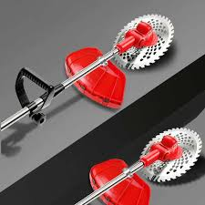
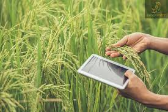
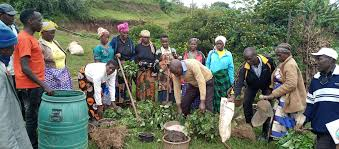

Supply of Agricultural Machinery
Tractors, plows, harrows, planters, harvesters, and irrigation systems.

Maintenance and Repair Services
Routine maintenance and repair of agricultural equipment to ensure optimal performance.

Custom Equipment Fabrication
Designing and fabricating equipment tailored to specific farming needs.

Consultation and Advisory
Providing expert advice on selecting, operating, and maintaining machinery.

Training for Farmers
Educating farmers and operators on machinery usage and safety protocols.

Leasing and Rental Services
Offering affordable rental options for machinery to farmers.

Spare Parts Supply
Supplying high-quality and affordable spare parts for various agricultural machines.